For the village
320,000people within 1 km of hidden water
A flood card, in Bengali
After each pass, one picture: the villages the water reaches, the roads under it, and when NISAR comes back.
Make Sylhet's flood cardNASA Space Apps 2026 · Dancing with the SARs
Cameras see clouds. Most radar sees leaves. NISAR's L-band radar, with a 24 cm wavelength, reaches the ground under forest, smoke and night. Under the Canopy maps what it finds: flood water hidden in forests, forest burned beneath the smoke, and ground that moved. Every number is checked against an independent measurement.
Built from real NISAR data (provisional release, June to October 2026)
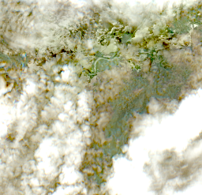
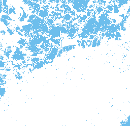
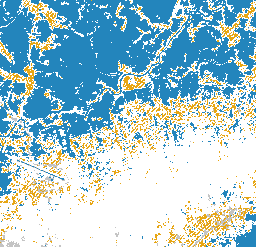
"Earth's surface is an endless dance of natural processes and human activities, but these changes are often difficult to visualize, understand, and communicate. From wetland loss to forest wildfires, earthquakes, farming activities, glacier movement, and more, Earth is in a constant waltz of surface changes. Your challenge is to build an interactive application that uses radar remote sensing data from the NASA-ISRO Synthetic Aperture Radar (NISAR) mission to track and visualize one or more types of surface change at locations around the world."
NASA Space Apps Challenge 2026
The surface changes it names, and ours
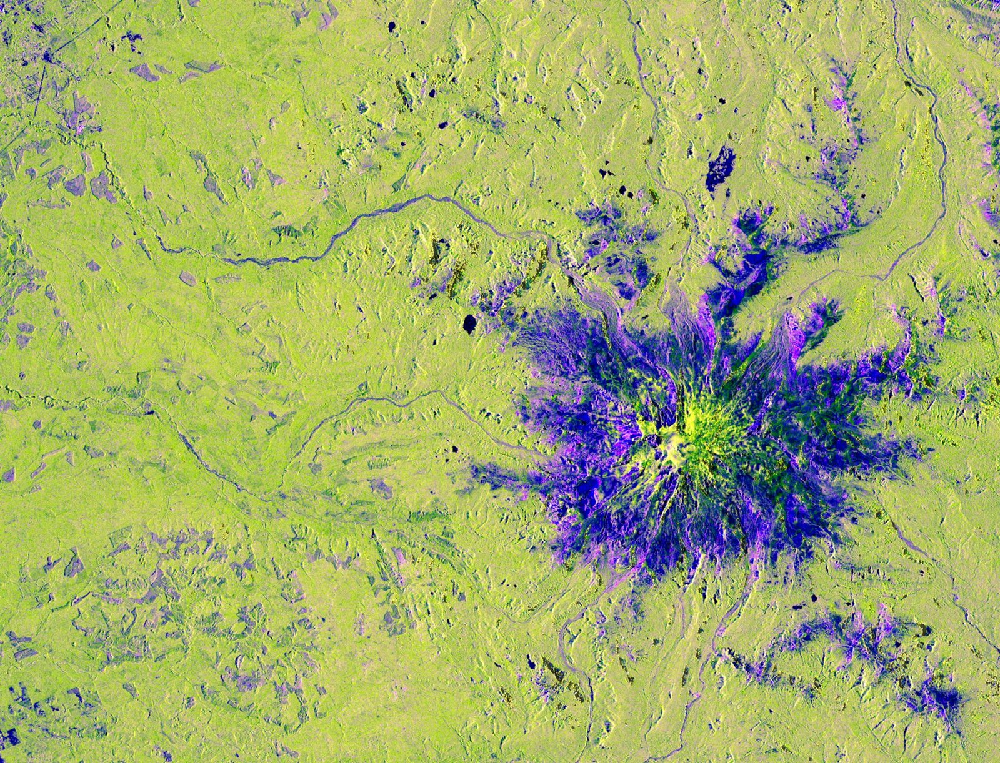
The challenge's image
NISAR's L-band radar saw the mountain on 10 November 2025, a cloudy day that hid it from cameras.
Move over the image to look closer.
NASA/JPL-Caltech (PIA26672), via NASA Space Apps
One finding, two scales
NISAR is the first mission that can see it every 12 days. We turn that into a card a village can use and a ledger the planet can count.
For the village
320,000people within 1 km of hidden water
After each pass, one picture: the villages the water reaches, the roads under it, and when NISAR comes back.
Make Sylhet's flood cardFor the planet
2,410–6,370 tof methane this season (estimate)
From water under the trees in 26 flooded forests, at published rates. In amber: the part under water C-band radar did not show.
Open the ledger at JanauacáA disaster, replayed
26 → 72 km²of water in 12 days
Chókwè, Mozambique, under 96 % cloud. NASA's own example of NISAR flood mapping, from early mission data.
Replay the floodFor anyone
See the place as a camera did, tap where water hides, and let L-band radar reveal it.
PlayTo listen to
One bar per 12-day pass: the river in the bass, the hidden flood in the tune, a clash where C-band missed it.
Hear Sylhet's seasonIn the monsoon, a clear view is rare. On 26 June, three days after NISAR's pass, no optical satellite had a clear view of Sylhet at all.
Radar sees through cloud, but short 5.6 cm waves bounce off the canopy. The river shows up; the water under the trees does not.
Its 24 cm waves slip past the leaves, bounce off the water and then the trunks, and return bright. That double echo marks water under trees.
At Sylhet alone, about this many people live within 1 km of water hidden under the trees: 320,000
The same physics and the same rule each time: a real map, one number, and what it was checked against.
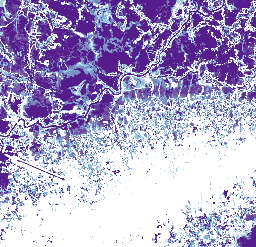
Floods under forest
137km²
flooded at least once this season at Sylhet, Bangladesh. The map counts the days each place stayed under water.
Checked against river gauges and NASA's SWOT water heights
Open the flood map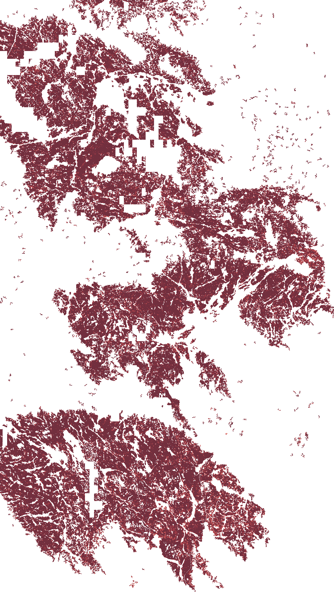
Wildfire
2,033km²
of forest burned at Ontario's Thunder Bay 36 fire, found pass by pass whatever the smoke. When forest burns, the echo from its leaves fades while the trunks and the ground still answer.
Checked against NASA's MODIS burned-area map
Open the fire map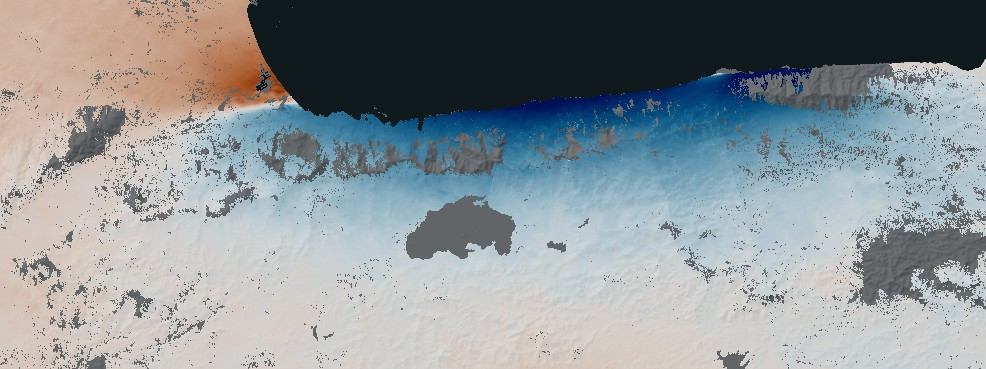
Venezuela, east–west motion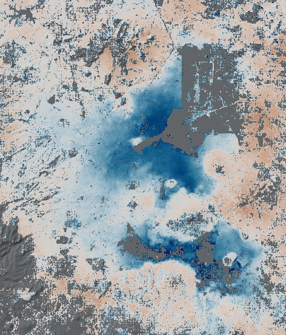
Mexico City, rise and fall a yearReading the colours
West, or sinkingEast, or risingEarthquake and sinking ground
70cm
west, Venezuela's earthquake
30cm a year
sinking, Mexico City
Up to about 70 cm west in Venezuela's earthquake of 24 June 2026, and up to about 30 cm a year of sinking in Mexico City, from the tiny shifts between radar passes.
Checked against NASA JPL's own processing, the USGS fault model and GPS stations
Open ground motionGlaciers
36m a day
at the front of Greenland's fastest glacier
28glaciers
in 15 countries, Greenland to Antarctica, 1985 to 2024
How fast each glacier flows, how that changed over 40 years, and how many NISAR passes already cover it. The speeds are NASA's ITS_LIVE; NISAR's own ice tracking is tested beside them, with where it does not yet resolve slow ice.
Checked against published measurements (Joughin et al. 2004 in Nature; Khazendar et al. 2019 in Nature Geoscience)
Open the glaciersA result only counts when something independent agrees with it. Three of the checks, drawn from the published data:
Sylhet: river level against the flood area NISAR mapped, 7 passes, correlation 0.94.
Thunder Bay 36: forest found burned by each radar pass, against NASA MODIS.
Mexico City, station MMX1, over the same months.
Six views of the same map. Each answers one question.
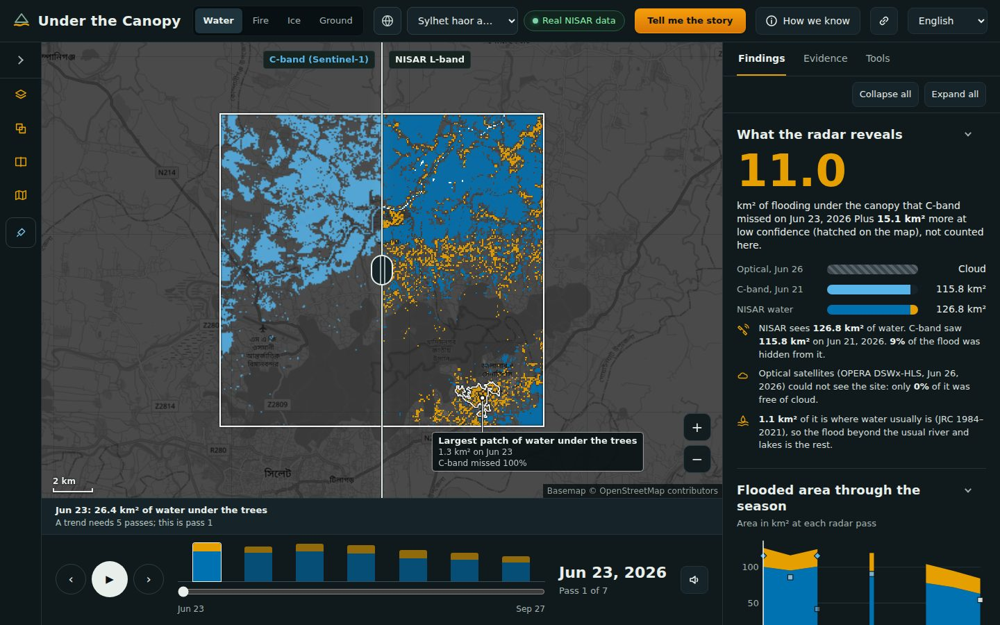
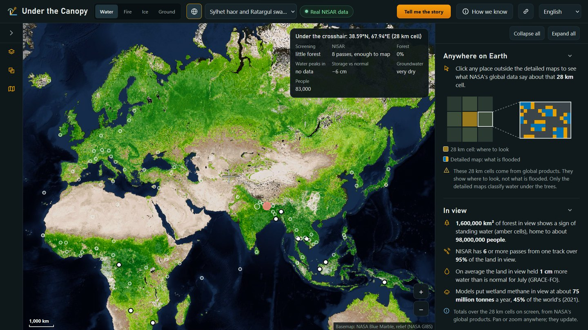
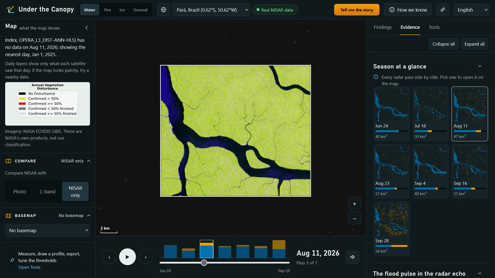
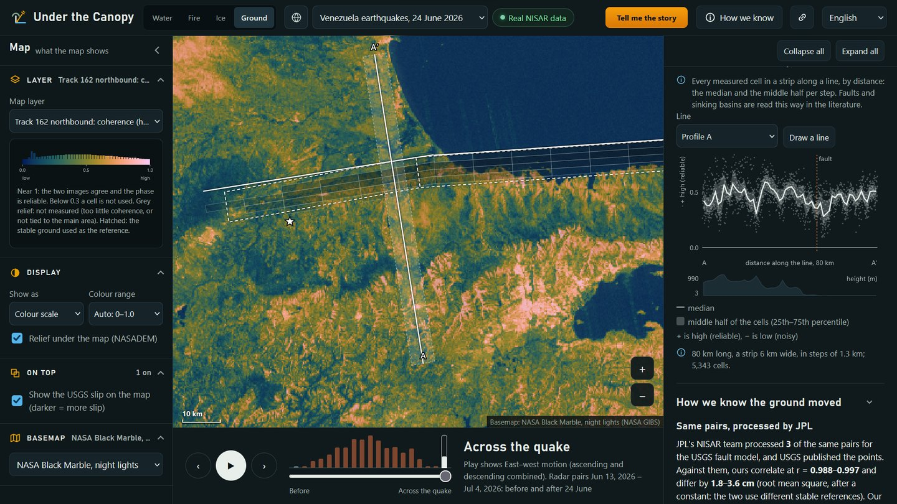
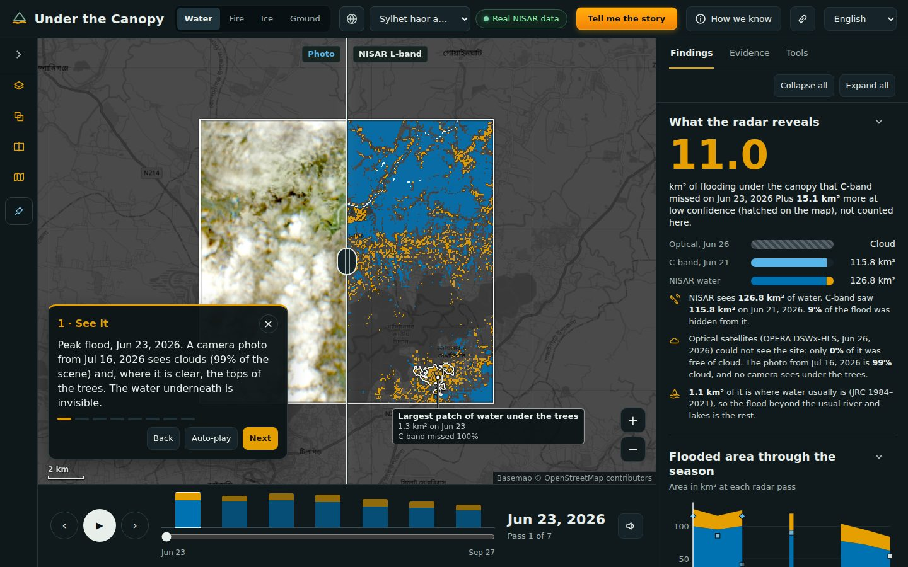
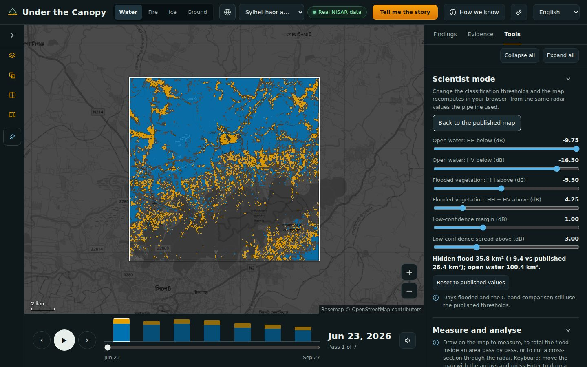
26 flooded forests on four continents, a fire in Canada, an earthquake in Venezuela and a sinking city, over a screening map of the whole planet.
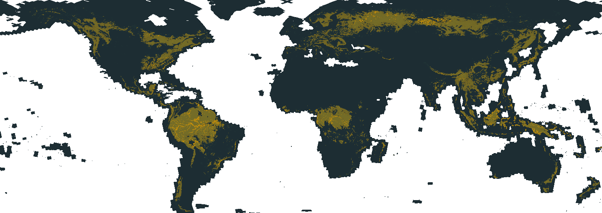
Six kinds of people bring six questions to the same map. Pick one to see why it fits them, and where to start.
Which villages by the forest need boats or supplies this week?
Why it fits
What they use
Is the forest by my village flooded, and for how long?
Why it fits
What they use
Are the thresholds right, and can I reuse the data?
Why it fits
What they use
How much wetland is really flooded, and for how long?
Why it fits
What they use
How can a satellite see water I cannot?
Why it fits
What they use
What would a radar record add to flood and fire response?
Why it fits
What they use
Google Colab
One Google Colab notebook for each flooded forest, fire, earthquake and glacier. The data travels inside it, so it runs with one click: nothing to install, no GitHub, no keys.
Open water is dark in both polarisations; flooded forest is bright in HH, a double bounce off water and trunks.
for k, p in enumerate(passes):
fv = area(cls[k] == FLOODED_VEG)
ow = area(cls[k] == OPEN_WATER)
assert (fv, ow) == (p["flooded_veg_km2"],
p["open_water_km2"]) # equal to the appp01 2026-06-23 26.389 100.381
p02 2026-07-05 21.101 95.404
p03 2026-07-17 24.312 100.922NISAR radar from the Alaska Satellite Facility, plus NASA's optical, lidar, water and rain records.
Every pixel of every pass is sorted by published radar rules you can read and change.
River gauges, NASA MODIS, JPL's processing and GPS stations, kept apart from the tuning.
Runs in any browser, even offline. No account, no fees, every file downloadable.
Limits are shown, uncertainty is drawn on the map, and every number traces back to a file.
We chose the changes other satellites miss, so NISAR is the reason the app exists.
Each map leads to who lives and travels next to the water, in the languages they speak.
Free NASA data, open downloads, no accounts. It runs on a modest laptop, so a district office can use it.
The team
Each of us owns one stretch of the architecture and hands it to the next. Follow a colour to see whose hands a finding passed through.
| Team member | 1Researchphysics, thresholds, checks | 2NASA data in40+ datasets, sites | 3Pipelinepipeline/ | 4Data contractweb/data/ | 5Map appweb/src/ | 6Storypages, film, languages |
|---|---|---|---|---|---|---|
| Md Sakib Khandaker | ||||||
| Faiyaz Ur Rahman | ||||||
| Mohammad Mehadi Hasan | ||||||
| Fabiha Nusrat |
Research and science lead
In the architectureEvery threshold in classify.py and every check in the Evidence view starts from this research.
Data pipeline and backend
In the architectureTurns the research into files: everything the browser reads comes out of pipeline/ through the data contract.
Core frontend and maps
In the architectureReads only web/data and draws it: this is where the data contract becomes something you can click.
Experience, story and outreach
In the architectureThe last stage: shapes how a first-time visitor, a judge or a village office meets the findings.
The contribution badges follow the all-contributors convention used by open-source projects: every kind of work is credited, not only code.
| Impact | Who lives next to hidden flood water, in the Site view | Open |
|---|---|---|
| Creativity | The three-way reveal, the season as sound, thresholds you can move | Open |
| Validity | Independent checks and stated limits, in the Evidence view | Open |
| Relevance | Real NISAR products, four kinds of surface change, places on four continents | Open |
| Presentation | The opening film, and the three-minute story in three languages | Watch |
Download the 30-second cut made for the Space Apps submission, narrated, with English subtitles (MP4) Run the notebook in Google Colab Every site, earthquake and glacier has its own notebook: open one in the app and choose Run in Colab.